GLICD
Ajout d'une application ou de paquets
avec le Gestionnaire de paquets Synaptic : Synaptic
Pour un système fiable et stable, il est recommandé d'installer les applications et les paquets
seulement sur les dépôts Debian. Les installations hors des dépôts Debian ne seront pas décrites dans ce MEMO.
Les applications sont organisées sous forme de paquets.
Synaptic est une interface graphique du gestionnaire de paquets.
Le gestionnaire de paquets permet d'installer, de mettre à jour ou de supprimer ces applications.
ATTENTION :
- Synaptic gère tous les programmes installés sur le système (PC).
- Synaptic est à utiliser avec le plus grand soin.
- Synaptic peut rendre le système inutilisable.
Avant de commencer, le PC doit être connecté à internet.
Voir le chapitre : Les périphériques réseaux (Internet)
Et, si besoin, modifier les sources de Apt (advanced package tool)
Voir le chapitre : Configurer les sources de Apt (advanced package tool)
- Se rendre dans le menu :
Simple clic > Applications > Système > Gestionnaire de paquets Synaptic
Simple clic > Gestionnaire de paquets Synaptic

- Une fenêtre apparait :
« Une authentification est requise pour exécuter le gestionnaire de paquet Synaptic »

- Saisir le mot de passe pour Root (superutilisateur)
Valider avec la touche Entrée du clavier
Ou simple clic > S'authentifier

- A la première ouverture du Gestionnaire de paquets Synaptic, la fenêtre de présentation rapide apparaît.
Lire puis simple clic > Fermer (il se peut que cette fenêtre n'apparaisse pas).

Nota : Pour agrandir les images du MEMO, positionner le pointeur de la souris sur l'image
Puis clic droit > Ouvrir l'image dans un nouvel onglet.
Dans le navigateur un nouvel onglet a dû s'ouvrir, simple clic sur l'onglet pour visualiser l'image.
- L'application de Synaptic apparaît, composée de 6 zones :
- Barre de menus : Fichier, Edition, Paquets, Configuration, Aide.
- Barre d'outils : Permet les actions principales. Recharger, Tout mettre à niveau...
- Sélecteur de catégorie : Affine la liste des paquets
- Liste des paquets : Répertorie les paquets connus. Peut être optimisé à l'aide de filtres.
- Champ de description : Affiche la description du paquet sélectionné.
- Barre d'état : Affiche des informations globales sur l'état de Synaptic.

- ATTENTION, avant d'installer un paquet faire
la mise à jour.
Si la mise à jour a été effectuée passer à l'étape suivante.
- Dans la barre d'outils à droite : Simple clic > Rechercher
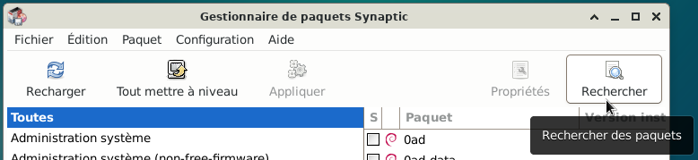
- Une fenêtre apparaît.
A l'aide du clavier, saisir le nom de l'application (paquet) à installer exemple : komi
Simple clic > Rechercher
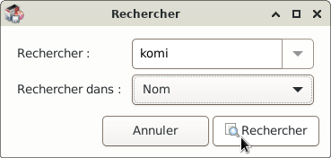
- La barre d'état qui se trouve en bas à droite et le pointeur de la souris qui est devenu une roue,
indiquent l'avancement de la recherche.
Patienter pour reprendre la main.
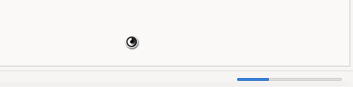
- La recherche terminée Synaptic affiche :
En 1 : Résultats de recherche est grisé.
En 2 : Le nom du paquet (Komi) s'affiche, il est sélectionné en bleu. Cela permet l'affichage en 3.
En 3 : Le paquet komi apparaît dans "la liste des paquets".
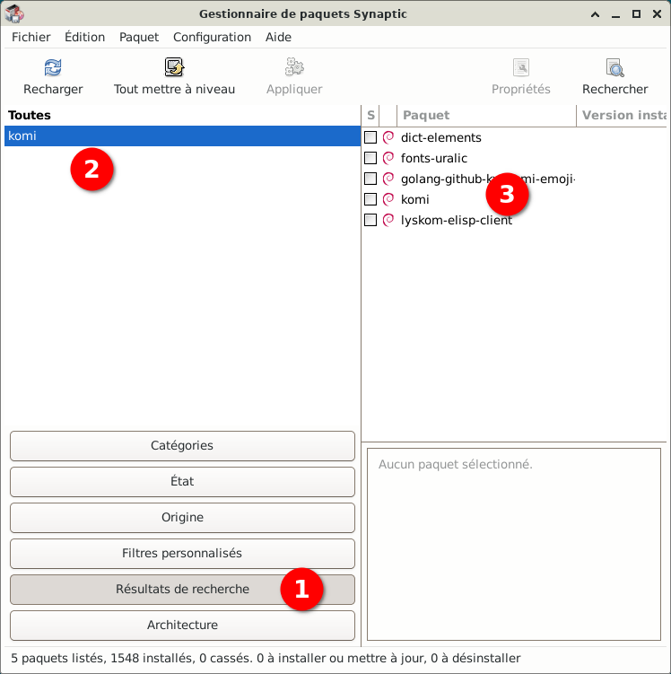
- Dans la liste des paquets, simple clic > Komi
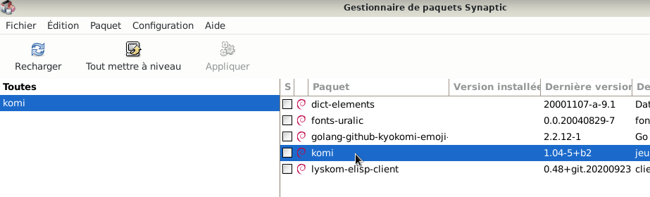
- Dans le champ de description s'affiche la description du paquet.
"Jeu d'arcade monojoueur avec Komi la grenouille de l'espace !"
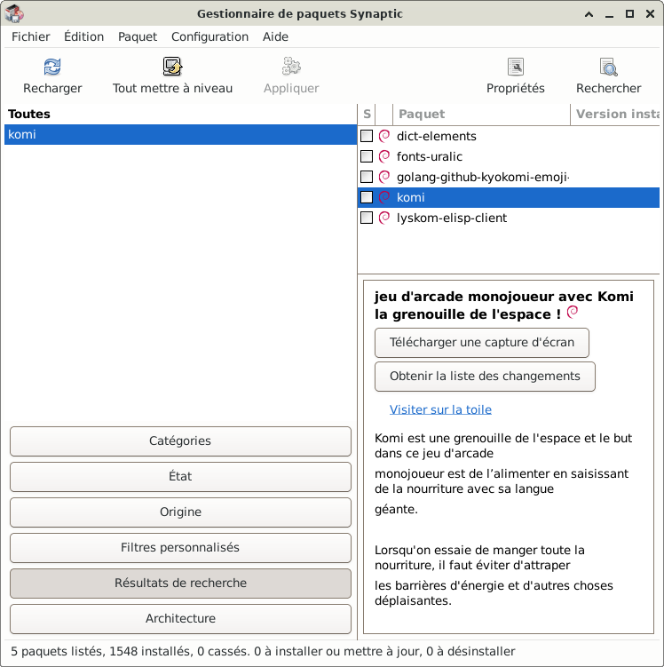
- Simple clic > dans le petit carré blanc à côté de komi
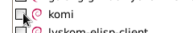
- En 1 : Une liste déroulante apparaît pour faire un choix
En 2 : La description du paquet sélectionné
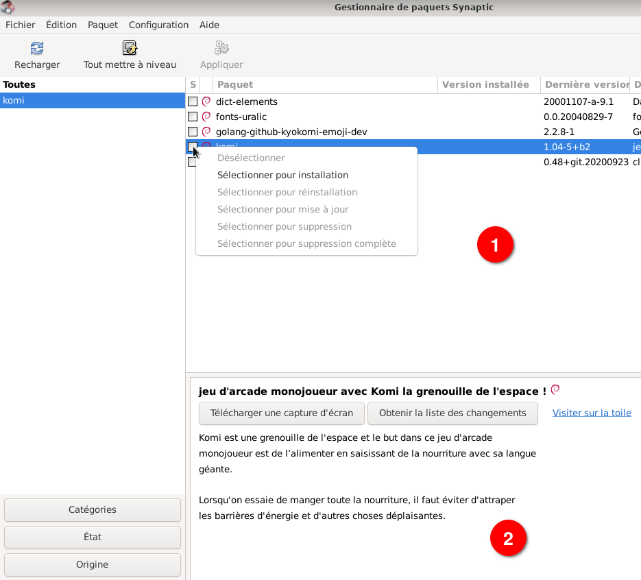
- Simple clic > Sélectionner pour installation
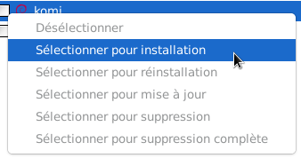
- Pour fonctionner correctement, un paquet peut avoir besoin d'autres paquets appelés les dépendances.
Une fenêtre peut apparaître pour ajouter une liste de paquets (les dépendances)
Simple clic > Ajouter à la sélection
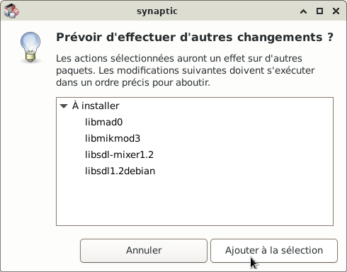
- Les paquets sélectionnés pour l'installation ont une flêche dans le petit carré.
Vérifier si la flêche est présente :
Ici dans le petit carré à côté de « Komi » se trouve une flêche.
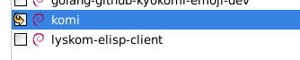
Légende de l'icône : A retrouver dans la barre de menu sous « Aide ».
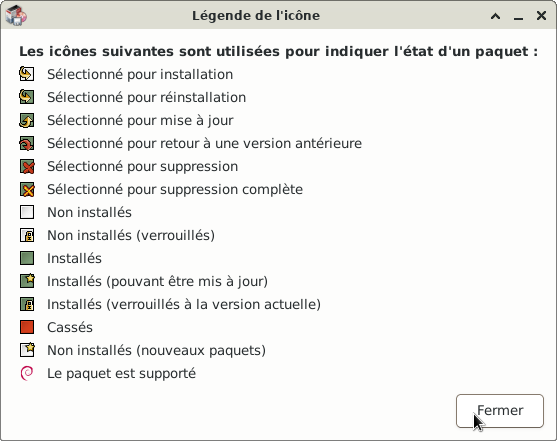
- Dans la barre d'outils, le bouton « Appliquer » doit être en noir.
Simple clic > Appliquer, pour appliquer tous les changements à la selection.
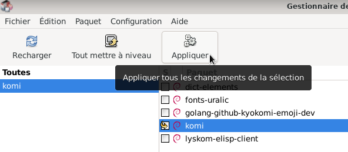
- Une fenêtre apparaît indiquant :
C'est votre dernière chance de parcourir la liste des chagements prévus avant qu'ils ne soient appliqués.
Simple clic > Appliquer
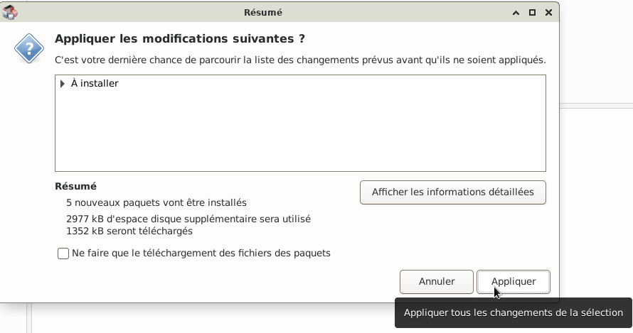
- Des fenêtres apparaîssent indiquant l'avancement du téléchargement en cours, patienter.
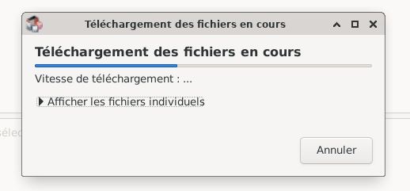
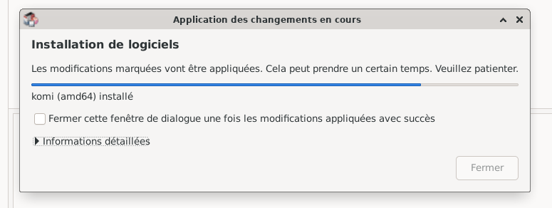
- Un message informe que les modifications ont été appliquées.
Simple clic > Fermer
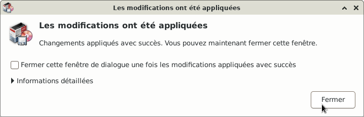
- Le petit carré à coté de "komi" doit être vert, idem pour ses dépendances.
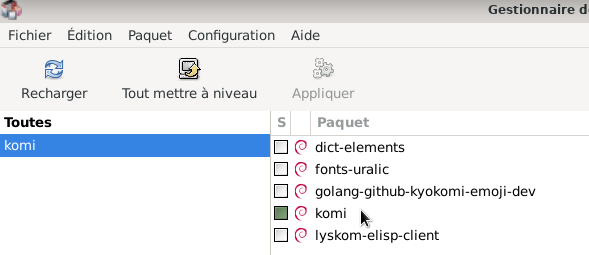
- Pour avoir des informations sur le paquet qui vient d'être installé :
Cliquer droit sur le nom du paquet « komi »
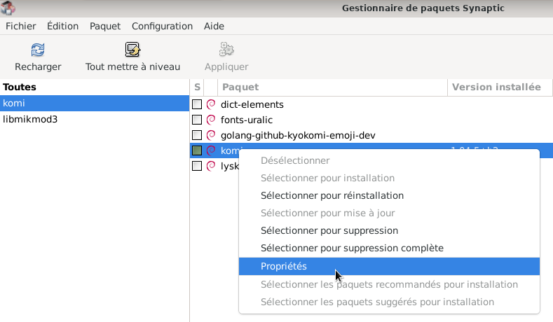
- Simple clic > Propriétés, une fenêtre affiche toutes les informations du paquet.
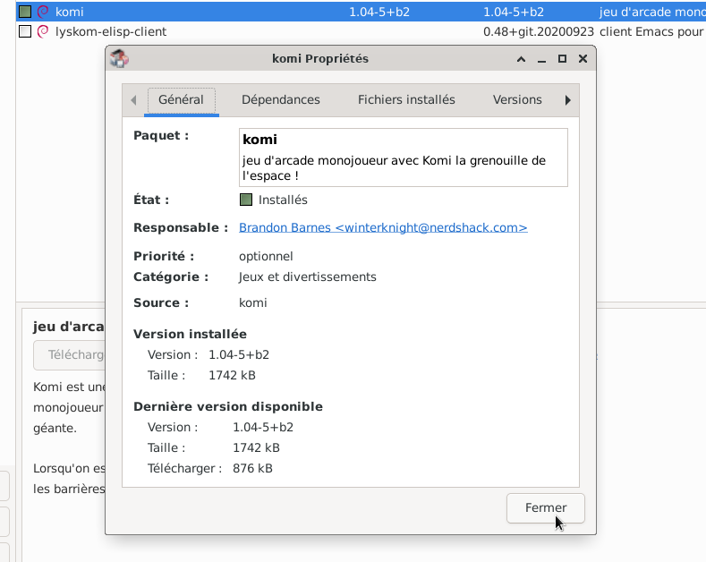
- Fermer la fenêtre : Simple clic > Fermer
- Fermer l'application Synaptic : Simple clic > Fichier > Quitter
Après l'installation, l'icône de l'application doit se retrouver dans la liste des Applications,
classée dans un des thèmes comme bureautique, graphisme, internet, multimédia...
Mais il y a des cas exceptionnels comme « komi »
L'application « komi » devra être ouverte avec le lanceur des applications.
Si besoin, voir le chapitre : Ouvrir l'application
Dans Gestionnaire de paquets Synaptic, simple clic > Aide pour consulter la documentation.
Visiter la page d'accueil de Synaptic.

Retour
Informations sur le logiciel libre et
Merci.
Marques déposées :
Ce site ne fait pas partie de Debian, n'est pas produit par le projet
Debian, ni approuvé par le projet Debian.
Ce site n'est pas affilié à Debian. Debian est une marque déposée appartenant
à Software in the Public Interest, Inc.
Contribuer :
Ce site ne fait pas partie de XFCE, n'est pas produit par le projet
XFCE, ni approuvé par le projet XFCE.
Ce site n'est pas affilié à XFCE.
Ce site est juste réalisé par un passionné.